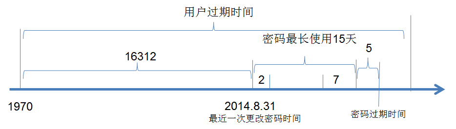

模型
Authentication 认证
Authorization 授权
Accouting | Auditin 审计
用户user
配置文件/etc/default/useradd
每个用户都有一个唯一uid
user都一个家目录 /home/
管理员 root ：0
普通用户 ：
系统用户：
1-499 centos6
1-999 centos7
登录用户：
500+ centos6
1000+ centos7
用户组 group
管理员组 ：root 0
普通组：gid
系统组：
1-499 centos6
1-999 centos7
普通组：
500+ centos6
1000+ centos7
组类别：
优先使用基本组 用户只能属于一个基本组 用户的默认组
主组：用户必须属于一个且只有一个主组
附加组：一个用户可以属于零个或多个附加组
私有组 创建用户时如果没有指定基本组 系统会创建和用户同名的一个组
/etc/group (users::20:root,sam 组名:口令:组标识号:组内用户列表)
用户和组的配置文件
/etc/passwd：用户及其属性信息(名称、UID、主组ID等）
/etc/group：组及其属性信息
/etc/shadow：用户密码及其相关属性
/etc/gshadow：组密码及其相关属性，极少情况下为Group设密码
passwd文件格式
root:x:0:0:root:/root:/bin/bash
login name：登录用名（wang）
passwd：密码 (x)
UID：用户身份编号 (1000)
GID：登录默认所在组编号 (1000)
GECOS：用户全名或注释
home directory：用户主目录 (/home/wang)
shell：用户默认使用shell (/bin/bash)
shadow文件格式
tom:$6$7I175sndgdfg:17800:0:99999:7:::
登录用名
用户密码:一般用sha512加密
从1970年1月1日起到密码最近一次被更改的时间
密码再过几天可以被变更（0表示随时可被变更）
密码再过几天必须被变更（99999表示永不过期）
密码过期前几天系统提醒用户（默认为一周）
密码过期几天后帐号会被锁定
从1970年1月1日算起，多少天后帐号失效
密码策略
查看用户密码加密类型 /etc/login.defs md5 128位
修改加密方式不需要之前密码加密方式
更改加密算法：
authconfig --passalgo=sha256 -–update
显示passwd密码 pwunconv
隐藏passwd密码 pwconv
明文加密 grub2-mkpasswd-pbkdf2
产生随机数
openssl rand -base64 10
echo | openssl passwd -stdin
head -c 32 /dev/random | base64
head -c 32 /dev/urandom | base64
head -c 32 /dev/urandom | md5sum |head -c 8
echo $RANDOM
用户默认策略
/etc/login.defs 用户密码策略
/etc/default/useradd 这个文件可以修改新建用户的默认属性
/etc/skel 家目录模板
cp /etc/skel/ /home/user -a
cp -r /etc/skel/.[^.]* /home/USER 恢复删除家目录
用户管理命令
用户过期时间（MD5 $1;sha512 $6）

用户创建
useradd [options] LOGIN
-r 创建系统账户，CentOS 6: ID<500，CentOS 7: ID<1000
-N 不创建与用户同名的基本用户组
-m 强制创建家目录
-M 不创建家目录，用于非系统用户
-s 指定用户的shell
-d 指定用户的家目录
-k 指定/etc/skel文件
-u 指定用户uid
-g 指定用户gid
-G 添加指定用户的附加组，组须事先存在
-o 忽略uid的检查，配合-u 选项
用户属性修改
usermod [OPTION] login
-c 填写用户账户的备注信息
-d -m 参数-m与参数-d连用 可重新指定用户的家目录并自动把旧的数据转移过去
-e 账户的到期时间 格式为YYYY-MM-DD
-g 变更所属用户组
-G 新附加组，原来的附加组将会被 覆盖；若保留原有，则要同时使用-a选项
-L 锁定用户禁止其登录系统
-U 解锁用户 允许其登录系统
-s 变更默认终端
-u 修改用户的UID
-f INACTIVE: 设定非活动期限
设置密码
passwd [OPTIONS] UserName
-d 删除用户密码
-l 锁定用户
-u 解锁用户
-e 强制用户下次登陆更改密码
-S 显示用户密码锁定状态 及加密算法
-n mindays：指定最短使用期限
-x maxdays：最大使用期限
-w warndays：提前多少天开始警告
-i inactivedays：非活动期限
--stdin 标准输入修改用户密码 如echo "New" | passwd --stdin Username
修改用户密码策略
chage [OPTION]... LOGIN
-d 设置最近一次更改密码时间
-E 设置账户过期时间
-I 设置密码过期时间
-l --list 列出用户账户密码信息
-m 设置用户最短密码使用时间
-M 设置用户最常密码使用时间
-W 设置密码更改警告时间
示例：
chage -d 0 tom 下一次登录强制重设密码
chage -m 0 –M 42 –W 14 –I 7 tom
chage -E 2016-09-10 tom
其他命令
1.userdel
-r 删除家目录
2.chsh 改变登陆shell
3.chfn 改变用户描述信息
vipw 直接打开/etc/passwd文件
4.finger 查看用户描述信息
安装使用 rpm -ivh finger-0.17-52.el7.x86_64.rpm
5.pwck 检查用户完整性
6.newusers 批量创建用户
7.chpasswd 批量创建用户密码
批量创建用户
user001:x:600:100:user:/home/user001:/bin/bash
1.newusers < user.txt
2.pwunconv 将shadow密码解码 回写到/etc/passwd中 将shadow中密码删掉
3.chpasswd < passwd.txt
8.pwconv 将密码编码到shadow中
9.给文件加锁!以免在编辑文件时！其他用户也在同时使用文件！而造成其他用户修改的不成功
vipw 修改/etc/passwd文件
vipw –s 修改/etc/shadow文件
管理组命令
创建组
groupadd [OPTION]... group_name
-g 指明GID
-r 创建系统组
groups 显示组,查看用户所属组列表
组属性修改
groupmod [OPTION]... group
-n group_name: 新名字
-g GID: 新的GID
组删除
groupdel GROUP
更改组密码
gpasswd [OPTION] GROUP
-a ：将用户添加至组中
-d ：将用户从组中删除
-A ：设置组的管理员
newgrp命令：临时切换主组
如果用户本不属于此组，则需要组密码
更改和查看组成员
groupmems
-a ：指定用户加入组
-g ：更改为指定GID
-d ：从组中删除用户
-l：显示组成员列表
-p :从组中清除所有成员
其他命令
grpck 检查组完整性
vigr 修改/etc/groups文件
vigr –s 修改/etc/gshadow文件
示例：
1.解决用userdel删除不掉用户的问题
一般我们移除，都是先把用户从组中删除，再依次把组删掉，但是这里出现了问题：
root@ per# userdel -r mysql
userdel： user mysql is currently used by process 1748
root@ per# groupdel mysql
groupdel：不能移除用户“mysql”的主组
删除该用户就提醒用户当前在进程运行，删除他的组也报错。
解决方法：
可使用vipw命令：
# vipw
找到之前创建的用户，用dd删除那行（记得保存：wq or ：x）。
# vipw -s
找到那个用户所属组，也dd干掉即可（记得保存：wq or ：x）
使用vipw -s的原因只有一个，就是必须保证数据的一致性，不然可能会造成系统崩溃等问题
2.恢复家目录
# cp /etc/skel/ /home/wangcai -a
·# ls -al
··# chmod 700 wangcai/